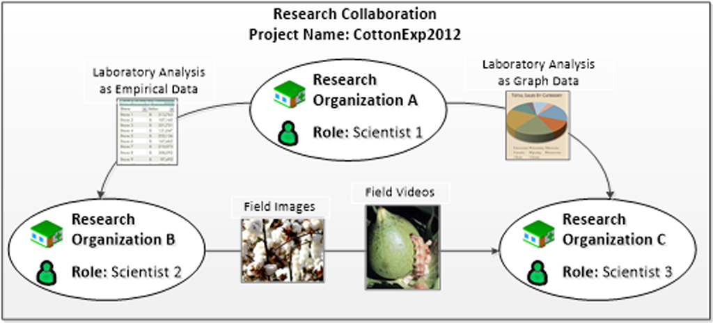

ResColLab - A Cloud-based Research Collaboration Platform for Sharing and Management of Scientific Data and Digital Resources. ResColLab is an integrated platform that will connect research organizations to share the research data and required tools through a collaborative web-based system. ResColLab provides a one-window solution to research, development, and innovation organizations for managing and collaborating the industry-academia cooperation and R&D project lifecycle management.
It creates an ecosystem of industry, academia, and public/private organization by engaging them in the technological development process for long-term research programs and projects.

H2O
42
Projects in Tabular Form:
| Project Name | Project Year |
|---|---|
| Rescolab | 2019 |
| CareStore | 2013 |
| Sectimmso | 2010 |